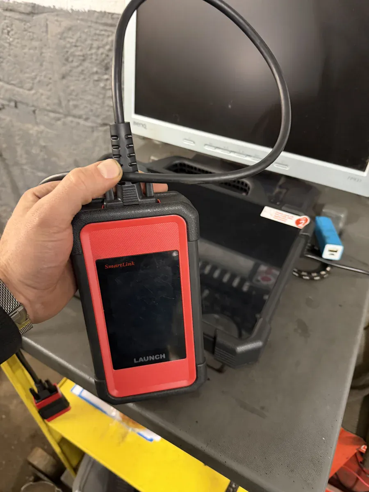
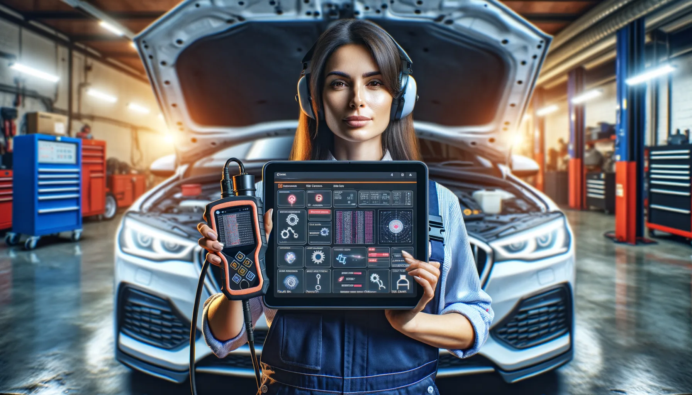
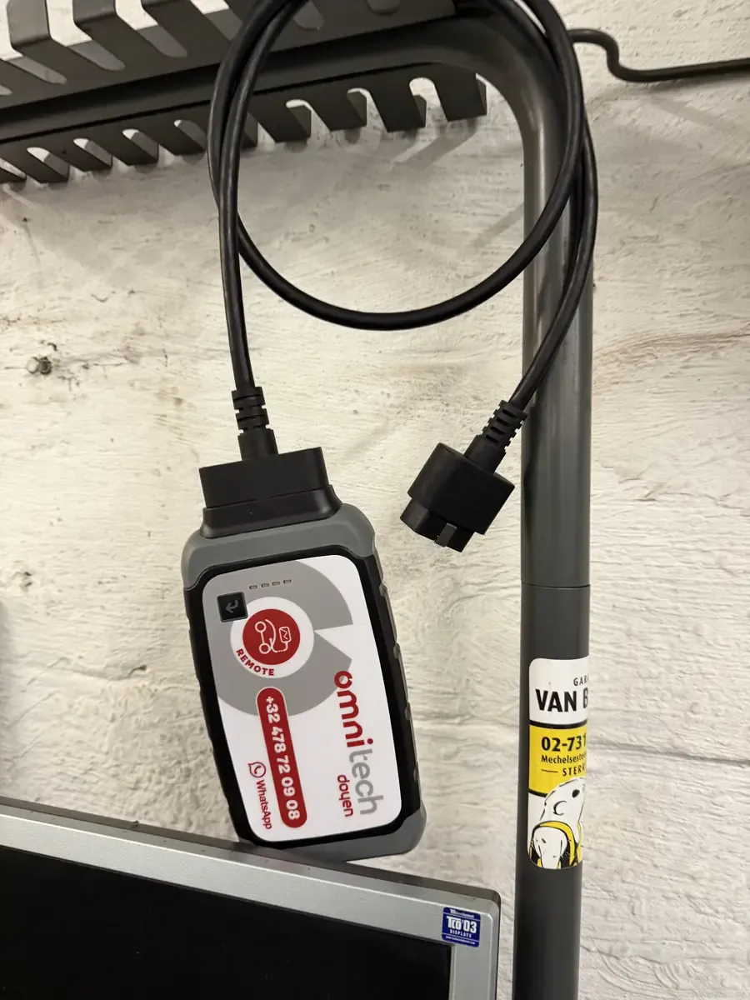

Voyant moteur allumé ? Perte de puissance ? Consommation qui a explosé ? Chez DMT AUTOGROUP, on lit les codes erreur et on analyse les données moteur en temps réel avec nos valises Launch, VCDS et ODIS. Toutes marques, avec une expertise poussée sur le groupe VAG. Diagnostic complet à partir de 50€. Motorlampje aan? Vermogensverlies? Verbruik dat door het dak gaat? Bij DMT AUTOGROUP lezen we foutcodes uit en analyseren we motorgegevens in real-time met onze Launch, VCDS en ODIS diagnosecomputers. Alle merken, met diepgaande expertise op de VAG-groep. Volledige diagnose vanaf 50€.
Tout le monde peut brancher un lecteur OBD2 à 30 euros acheté sur Amazon et lire un code P0420. Le problème, c'est que P0420 vous dit juste "rendement catalyseur insuffisant". OK. Et maintenant ? C'est le catalyseur ? La sonde lambda ? Une fuite d'échappement ? Un raté d'allumage qui endommage le catalyseur ? Iedereen kan een OBD2-lezer van 30 euro van Amazon aansluiten en een P0420-code uitlezen. Het probleem is dat P0420 u alleen vertelt "katalysatorrendement onvoldoende". Oké. En nu? Is het de katalysator? De lambdasonde? Een uitlaatlek? Een misfire die de katalysator beschadigt?
C'est là qu'un vrai diagnostic fait la différence. Daar maakt een echte diagnose het verschil.
On utilise la valise Launch X-431 pour le multi-marques — c'est un outil professionnel qui va bien au-delà de la simple lecture de codes. On accède aux données en temps réel : température des gaz d'échappement, pression du turbo, débit d'air, avance à l'allumage, correction de carburant à court et long terme. Ces chiffres racontent l'histoire que les codes erreur seuls ne peuvent pas raconter. We gebruiken de Launch X-431 voor multi-merk — een professioneel instrument dat veel verder gaat dan simpel codes uitlezen. We hebben toegang tot real-time data: uitlaatgastemperatuur, turbodruk, luchtdebiet, ontstekingstijdstip, brandstofcorrectie op korte en lange termijn. Die cijfers vertellen het verhaal dat foutcodes alleen niet kunnen vertellen.
Un diagnostic chez nous, c'est la lecture des codes, l'analyse des données live, un essai routier si nécessaire, et un rapport clair. On vous explique ce qui se passe, ce qu'il faut faire, et combien ça va coûter. Pas de jargon incompréhensible, pas de liste de pièces à remplacer "par précaution". Een diagnose bij ons is het uitlezen van de codes, de analyse van live-data, een proefrit indien nodig, en een duidelijk rapport. We leggen uit wat er aan de hand is, wat er gedaan moet worden, en hoeveel dat gaat kosten. Geen onbegrijpelijk jargon, geen lijst onderdelen om "uit voorzorg" te vervangen.
Chez un concessionnaire, un diagnostic moteur c'est 120-200 euros. Chez nous, on démarre à 50 euros. Et si vous faites la réparation chez nous, le diagnostic est souvent déduit de la facture finale. Bij een concessie kost een motordiagnose 120-200 euro. Bij ons beginnen we vanaf 50 euro. En als u de reparatie bij ons laat doen, wordt de diagnose vaak van de eindfactuur afgetrokken.


Le voyant moteur, c'est le truc le plus mal compris en automobile. Il s'allume, et la moitié des gens paniquent en pensant que le moteur va exploser. L'autre moitié l'ignorent pendant six mois et roulent comme si de rien n'était. Les deux ont tort. Het motorlampje is het meest verkeerd begrepen ding in de auto-industrie. Het gaat aan, en de helft van de mensen raakt in paniek en denkt dat de motor gaat ontploffen. De andere helft negeert het zes maanden en rijdt gewoon door. Beide hebben ongelijk.
Dans la majorité des cas, un voyant moteur fixe signale un problème d'émissions. Les causes les plus fréquentes qu'on voit au garage : In de meeste gevallen wijst een vast motorlampje op een emissieprobleem. De meest voorkomende oorzaken die we in de garage zien:
Capteur O2 (sonde lambda) fatigué — après 150 000-200 000 km, c'est normal. Le capteur réagit plus lentement, le mélange air-essence n'est plus optimal, et le calculateur signale le problème. Remplacement : 150-300 euros chez nous, 350-600 en concession. Vermoeide O2-sensor (lambdasonde) — na 150 000-200 000 km is dat normaal. De sensor reageert trager, het lucht-brandstofmengsel is niet meer optimaal, en de computer meldt het probleem. Vervanging: 150-300 euro bij ons, 350-600 bij de concessie.
Vanne EGR encrassée — surtout sur les diesel, mais aussi sur les essence modernes. La vanne se bloque avec les suies, le moteur perd en puissance, la consommation augmente. Nettoyage ou remplacement, selon l'état. Vervuilde EGR-klep — vooral bij diesel, maar ook bij moderne benzinemotoren. De klep blokkeert door roet, de motor verliest vermogen, het verbruik stijgt. Reiniging of vervanging, afhankelijk van de toestand.
Ratés d'allumage — bougie morte, bobine d'allumage défaillante, injecteur qui fuit. Les codes P0300 à P0312 vous indiquent quel cylindre. Si le voyant clignote, c'est que les ratés sont actifs et qu'ils peuvent endommager le catalyseur. Là, il faut réagir vite. Misfires — dode bougie, defecte ontstekingsspoel, lekkende injector. De codes P0300 tot P0312 geven aan welke cilinder. Als het lampje knippert, zijn de misfires actief en kunnen ze de katalysator beschadigen. Dan moet u snel reageren.
Le point commun de tous ces problèmes ? Un diagnostic rapide permet de les identifier et de les régler avant qu'ils ne causent des dégâts plus importants — et plus chers. De gemene deler van al deze problemen? Een snelle diagnose laat toe ze te identificeren en op te lossen voordat ze grotere — en duurdere — schade veroorzaken.

Vous avez trouvé la bonne occasion sur 2ememain ou Autoscout24. Le prix est correct, le vendeur a l'air sérieux, la voiture roule bien pendant l'essai. Tout est parfait. U hebt de juiste occasion gevonden op 2dehands of Autoscout24. De prijs klopt, de verkoper lijkt serieus, de auto rijdt goed tijdens de proefrit. Alles lijkt perfect.
Sauf que vous ne voyez pas les codes erreur effacés la veille. Vous ne sentez pas que la boîte de vitesses patine légèrement en 3ème. Vous ne remarquez pas la petite trace d'huile sur le joint de culasse qui annonce 2000 euros de réparation dans six mois. Behalve dat u de foutcodes niet ziet die gisteren gewist zijn. U voelt niet dat de versnellingsbak licht slipt in de 3de. U merkt het kleine spoortje olie op de koppakking niet op dat 2000 euro reparatie aankondigt over zes maanden.
Notre diagnostic pré-achat, c'est votre filet de sécurité. On branche la valise et on lit tout : les codes erreur actuels, mais surtout l'historique — les codes qui ont été effacés. Un vendeur malin efface les codes avant la vente. Un outil professionnel voit quand même les traces. On vérifie aussi l'état de l'embrayage ou de la boîte automatique, les compressions moteur si nécessaire, et on fait un essai routier avec l'oeil du mécanicien. Onze pre-aankoop diagnose is uw vangnet. We sluiten de computer aan en lezen alles uit: de huidige foutcodes, maar vooral de geschiedenis — de codes die gewist zijn. Een slimme verkoper wist de codes voor de verkoop. Een professioneel instrument ziet toch de sporen. We controleren ook de staat van de koppeling of automatische versnellingsbak, de compressie als dat nodig is, en we maken een proefrit met het oog van de monteur.
On a déjà sauvé des clients de mauvaises affaires. Un Tiguan 2.0 TDI avec une boîte DSG en fin de vie — 3000 euros de réparation que le vendeur "ne savait pas". Un BMW 320d avec un turbo qui sifflait et un voile de fumée bleue au démarrage. Un Audi A4 avec un historique de codes effacés long comme le bras. À chaque fois, le client a évité un piège à 2000-5000 euros pour un diagnostic à 90 euros. We hebben klanten al van slechte deals gered. Een Tiguan 2.0 TDI met een DSG-versnellingsbak op het einde van zijn leven — 3000 euro reparatie die de verkoper "niet wist". Een BMW 320d met een turbo die floot en een sluier blauwe rook bij het starten. Een Audi A4 met een eindeloze geschiedenis van gewiste foutcodes. Elke keer vermeed de klant een val van 2000-5000 euro voor een diagnose van 90 euro.
Une valise multi-marques, c'est bien. Mais pour aller en profondeur sur certaines marques, il faut les outils du constructeur. C'est comme la différence entre un couteau suisse et un outil chirurgical — les deux coupent, mais pas avec la même précision. Een multi-merk diagnosecomputer is goed. Maar om diep te gaan bij bepaalde merken, heb je de tools van de fabrikant nodig. Het is het verschil tussen een Zwitsers zakmes en een chirurgisch instrument — beide snijden, maar niet met dezelfde precisie.
Groupe VAG (Volkswagen, Audi, Seat, Skoda) — On utilise le VCDS (VAG-COM) et l'ODIS, les mêmes outils que les concessions VW et Audi. Ça nous donne accès au codage des modules, aux adaptations, au calibrage de la boîte DSG, à la réinitialisation des services, et aux fonctions que la valise multi-marques ne peut tout simplement pas faire. Avec 15 ans d'expérience sur le groupe VAG, c'est notre terrain de jeu principal. VAG-groep (Volkswagen, Audi, Seat, Skoda) — We gebruiken VCDS (VAG-COM) en ODIS, dezelfde tools als de VW- en Audi-concessies. Dat geeft ons toegang tot modulecodering, adaptaties, DSG-versnellingsbak kalibratie, service-reset, en functies die de multi-merk computer simpelweg niet kan. Met 15 jaar ervaring op de VAG-groep is dat ons hoofdterrein.
BMW — Les BMW modernes sont des ordinateurs sur roues. On a les outils pour lire les systèmes spécifiques BMW : Valvetronic, VANOS, système de charge, iDrive. Les codes génériques OBD2 ne donnent que la surface — il faut aller chercher les codes constructeur pour avoir le vrai diagnostic. BMW — Moderne BMW's zijn computers op wielen. We hebben de tools om BMW-specifieke systemen uit te lezen: Valvetronic, VANOS, laadsysteem, iDrive. De generieke OBD2-codes geven alleen het oppervlak — je moet de fabrikantcodes opvragen voor de echte diagnose.
Mercedes — Même histoire. Les systèmes Mercedes ont leurs propres protocoles de communication. On accède aux données du moteur, de la boîte 7G-Tronic ou 9G-Tronic, du système de suspension pneumatique, de l'électronique embarquée. Mercedes — Zelfde verhaal. Mercedes-systemen hebben hun eigen communicatieprotocollen. We hebben toegang tot de motor-, de 7G-Tronic of 9G-Tronic versnellingsbak-, luchtvering- en boordcomputergegevens.
Que vous ayez besoin d'une réparation moteur suite au diagnostic, ou d'un simple entretien, ou même d'un check sur votre système électrique — tout se fait au même endroit, par la même équipe. Of u nu een motorherstelling nodig hebt na de diagnose, of een eenvoudige onderhoudsbeurt, of zelfs een controle van uw elektrisch systeem — alles gebeurt op dezelfde plek, door hetzelfde team.
Entre 50 et 90€ chez nous, selon la complexité. En concession, la même prestation c'est 120-200€. Et si vous faites la réparation chez nous suite au diagnostic, le montant est souvent déduit de la facture finale. Tussen 50 en 90€ bij ons, afhankelijk van de complexiteit. Bij de concessie kost dezelfde dienst 120-200€. En als u de reparatie bij ons laat doen na de diagnose, wordt het bedrag vaak van de eindfactuur afgetrokken.
Un voyant qui s'allume brièvement veut dire que le calculateur a vu une anomalie ponctuelle. Le code reste en mémoire. Pas de panique, mais faites lire les codes quand vous pouvez. Mieux vaut savoir ce qui s'est passé que de découvrir un vrai problème trois mois plus tard. Een lampje dat kort oplicht betekent dat de computer een tijdelijke afwijking heeft gedetecteerd. De code blijft in het geheugen. Geen paniek, maar laat de codes uitlezen wanneer het u past. Beter nu weten wat er gebeurd is dan over drie maanden een echt probleem ontdekken.
Oui, avec notre valise Launch multi-marques. Et pour le groupe VAG (VW, Audi, Seat, Skoda), on a le VCDS et l'ODIS en plus — les outils concessionnaire pour les fonctions avancées. On a aussi les outils spécifiques BMW et Mercedes. Ja, met onze Launch multi-merk diagnosecomputer. En voor de VAG-groep (VW, Audi, Seat, Skoda) hebben we daarbovenop VCDS en ODIS — de concessietools voor geavanceerde functies. We hebben ook de specifieke BMW- en Mercedes-tools.
Un check-up complet avant d'acheter une occasion. On lit l'historique des codes erreur (même effacés), on vérifie le moteur, la boîte, on fait un essai routier. On a déjà évité à des clients d'acheter des voitures avec 3000-5000€ de réparations cachées. L'investissement de 90€ vaut largement le coup. Een volledige check-up voor u een tweedehands koopt. We lezen de foutcode-geschiedenis uit (ook gewiste codes), controleren de motor, de versnellingsbak, maken een proefrit. We hebben klanten al behoed voor de aankoop van auto's met 3000-5000€ verborgen reparaties. De investering van 90€ is het meer dan waard.
Fixe, c'est souvent un problème d'émissions — capteur O2, EGR, catalyseur. Pas toujours grave, mais à vérifier. Par contre, si le voyant clignote, c'est des ratés d'allumage actifs qui peuvent endommager le catalyseur. Réduisez la vitesse et venez rapidement. Constant branden is vaak een emissieprobleem — O2-sensor, EGR, katalysator. Niet altijd ernstig, maar moet gecontroleerd worden. Als het lampje knippert daarentegen, zijn er actieve misfires die de katalysator kunnen beschadigen. Verminder snelheid en kom snel langs.
Diagnostic moteur complet à partir de 50€
Lundi — Vendredi · 08:30 — 18:00
Mechelsesteenweg 270, 1933 ZaventemVolledige motordiagnose vanaf 50€
Maandag — Vrijdag · 08:30 — 18:00
Mechelsesteenweg 270, 1933 Zaventem